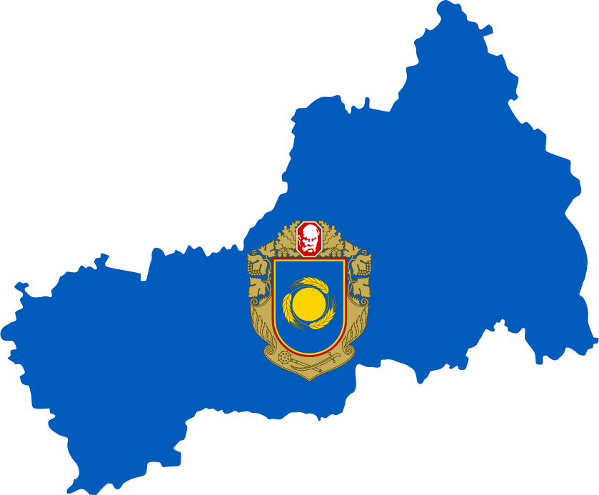
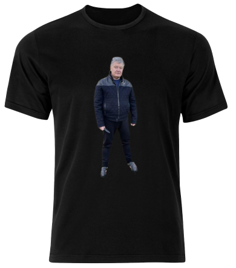
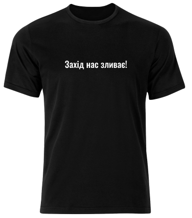
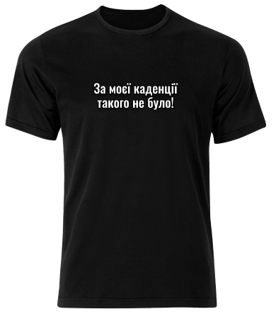
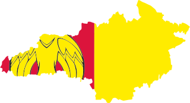

1
2
3
4
Колонка #1
Колонка #2
Колонка #3
Колонка #4
Черкаська область
Офіційний сайт Черкаської обласної адміністраціїЧерка́ська о́бласть (Черкащина) — адміністративно-територіальна одиниця України першого рівня, розташована у центральній лісостеповій частині країни по обидва берега середньої течії Дніпра та Південного Бугу.
Hetman shop
Футболка

Футболка "сивочолий гетьман перемоги". На 101% виконана із перероблених матеріалів. Ідеально підійде
для будь-якого свята. Має 8 сатандартних
розмірів.
Купити цю!
Футболка

Футболка "Захід нас зливає". На 103% виконана із натуральних матеріалів, в т.ч. 2% бавовни із
бєлгорода. Підійде поціновувачам тонкого гумору.
Купити цю!
Футболка

Футболка "За моєї каденції такого не було". На 99% складається з відмазок і
на
1% із бавовни. Напис на фтуболці виконаний Азбукою Морзе. Ідеальгнго підійде, якщо вам потрібно
повідомити співрозмовнику, що ви ні в чому не винні!
Купити цю!
Область на півночі межує з Київською, на півдні з Кіровоградською, на сході з
Полтавською та з Вінницькою областю на
заході. Простягнулася із південного заходу на північний схід на 245 км, із півночі на південь — на 150
км.

Кіровогра́дська о́бласть (Кіровоградщина)— область у центральній частині України.
Утворена 10 січня 1939 року, обласний
центр — Кропивницький.

Полта́вська о́бласть (Полтавщина) — адміністративно-територіальна одиниця України
з центром у місті Полтава. Утворена 22
вересня 1937 року. Розташована у середній частині Лівобережної України і, частково, на Правобережній
Україні. Більша
частина області лежить у межах Придніпровської низовини та Полтавської рівнини.

Ві́нницька о́бласть (Вінниччина) — область у Центральній Україні. Населення
становить 1,6 млн осіб (2018 р.).